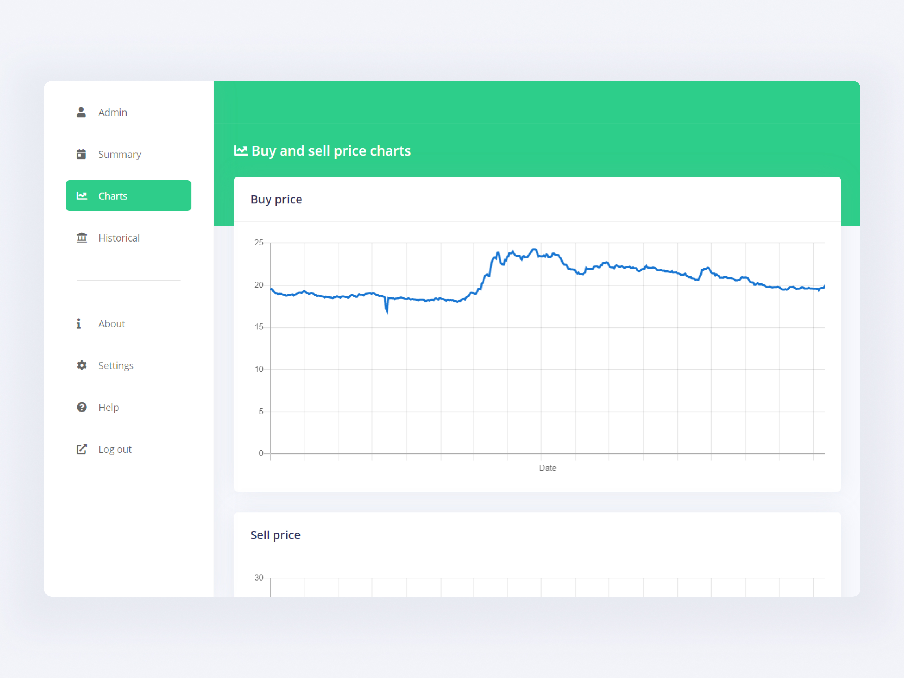
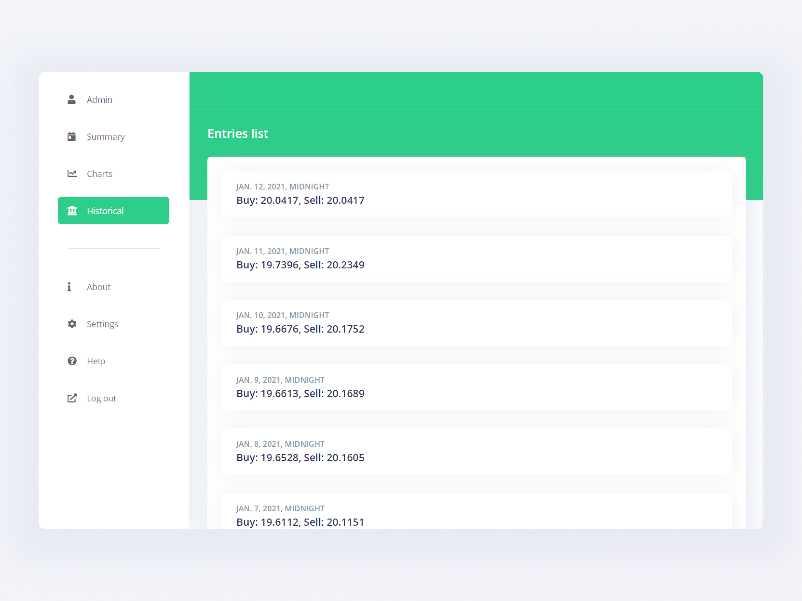

Dollar Insights Web App
This project was developed for giving the user important details about the comparison between the USD and MXN. It compares its values and gives an insight about the top buy/sell prices of the currency.
The source data was mined out a public website that had the prices of the USD updated daily. Since this didn’t provided much information (like charts, percentage compared to the previous day, etc.), this project was born.
The technologies used here was principally Django, in combination with a exposed REST API mainly for two purposes: serve as the entry point for data mining and provide the data for the frontend. The persistence layer was made using Django Models and PostgreSQL for storing the entries. This application was uploaded to a Heroku instance, since it has no login, no authentication method was provided, but it is ready to be implemented with techniques such as JWT or OAuth.
For the data mining process, it uses a combination of Selenium Web Driver and BeautifulSoup4 for parsing the website and obtain the data. A process is called daily for obtaining the data and storing it into the persistence layer of the backend. This way it ensures that the application is losely coupled and allows making adjustments without breaking changes to the base code.
The frontend application is divided in two parts: one is the normal website made in Bootstrap/jQuery and the other was made on Ionic Framework 5, so this data can be requested on a browser as well as having a dedicated and standalone native application for iOS and Android devices. They both query the data from the backend service and show the same shared data in appropriate format. The website also supports responsive and look great on mobile devices.
One of the challenges making this complete full stack solution were making requests on a dynamic website that runs Javascript internally to obtain the data it displays. It would be easier to have an already exposed API to have this information in a more appropriate format (JSON) or be easier to query. As already noted, security on browsers and servers prevented doing that directly so the scrap solution was the selected solution.
- GitHub Repository
- Live project